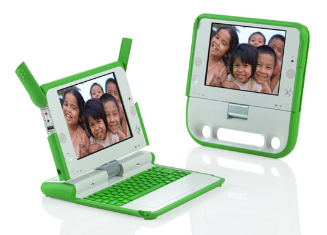
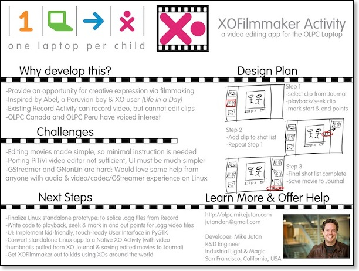

<!DOCTYPE html PUBLIC "-//W3C//DTD XHTML 1.0 Strict//EN" "http://www.w3.org/TR/xhtml1/DTD/xhtml1-strict.dtd">
<html xmlns="http://www.w3.org/1999/xhtml">

<!-- | - - - - - - - - - - - - - - - - - - - - - - - - - - - - - - - - - - - - - - - - - - - - - - - - - - - - -

Version: 1.2

- - - - - - - - - - - - - - - - - - - - - - - - - - - - - - - - - - - - - - - - - - - - - - - - - - - - - | -->

	<head>
		<title>mikejutan.com :: Side Projects :: One Laptop Per Child</title>
		
<!-- Meta -->
		<meta http-equiv="Content-Type" content="text/html; charset=utf-8" />
		<meta name="generator" content="RapidWeaver" />
		<link rel="icon" href="http://www.mikejutan.com/favicon.ico" type="image/x-icon" />
		<link rel="shortcut icon" href="http://www.mikejutan.com/favicon.ico" type="image/x-icon" />
		<link rel="apple-touch-icon" href="http://www.mikejutan.com/apple-touch-icon.png" />
		
		
<!-- CSS -->
		<link rel="stylesheet" type="text/css" media="screen" href="../../rw_common/themes/avante/styles.css" />
		<link rel="stylesheet" type="text/css" media="screen" href="../../rw_common/themes/avante/css/css3/style.css3.css" />
		<link rel="stylesheet" type="text/css" media="screen" href="../../rw_common/themes/avante/css/prettyPhoto.css" />
		<link rel="stylesheet" type="text/css" media="screen" href="../../rw_common/themes/avante/colourtag-page28.css" />
		<link rel="stylesheet" type="text/css" media="print" href="../../rw_common/themes/avante/print.css" />
		
<!--[if lt IE 9]>
        <link rel="stylesheet" type="text/css" media="all" href="../../rw_common/themes/avante/css/style.ie.css" />
<![endif]-->


<!-- JavaScript : Include and embedded version -->
		<script type="text/javascript" src="../../rw_common/themes/avante/js/jquery.min.js"></script>
		<script type="text/javascript" src="../../rw_common/themes/avante/js/jquery.prettyPhoto.js"></script>
		<script type="text/javascript" src="../../rw_common/themes/avante/js/custom.js"></script>
		<script type="text/javascript" src="../../rw_common/themes/avante/js/rwget.js"></script>
		<script type="text/javascript" src="../../rw_common/themes/avante/javascript.js"></script>
		<script charset="utf-8">
		RwSet = {
			pathto: "../../rw_common/themes/avante/javascript.js",
			baseurl: "http://www.mikejutan.com/"
		};
		</script>

<!-- JavaScript & CSS : Style Variations -->
		<script type="text/javascript" src="../../rw_common/themes/avante/js/extracontent.js"></script>
		<script type="text/javascript" src="../../rw_common/themes/avante/js/facebook.js"></script>
		<link rel="stylesheet" type="text/css" media="screen" href="../../rw_common/themes/avante/css/bg_images/bg_vertical.css" />
		<link rel="stylesheet" type="text/css" media="screen" href="../../rw_common/themes/avante/css/font_face/expletussans-regular.css" />
		<link rel="stylesheet" type="text/css" media="screen" href="../../rw_common/themes/avante/css/font_family/lucida-grande.css" />
		<link rel="stylesheet" type="text/css" media="screen" href="../../rw_common/themes/avante/css/width/960.css" />
		<link rel="stylesheet" type="text/css" media="screen" href="../../rw_common/themes/avante/css/rounded_corners/round_6px.css" />
		<link rel="stylesheet" type="text/css" media="screen" href="../../rw_common/themes/avante/css/top_menu/float_left.css" />
		<link rel="stylesheet" type="text/css" media="screen" href="../../rw_common/themes/avante/css/top_menu/fs_13.css" />
		<link rel="stylesheet" type="text/css" media="screen" href="../../rw_common/themes/avante/css/main_content/fs_13.css" />
		<link rel="stylesheet" type="text/css" media="screen" href="../../rw_common/themes/avante/css/sidebar/sidebar_right.css" />
		<link rel="stylesheet" type="text/css" media="screen" href="../../rw_common/themes/avante/css/side_content/fs_11.css" />
		<link rel="stylesheet" type="text/css" media="screen" href="../../rw_common/themes/avante/css/bottom_content/fs_12.css" />
		<link rel="stylesheet" type="text/css" media="screen" href="../../rw_common/themes/avante/css/banner_height/hide_banner.css" />
		<link rel="stylesheet" type="text/css" media="screen" href="../../rw_common/themes/avante/css/stock/banner_1.css" />
		
		<style type="text/css" media="all">#tophead .floatclear.center {
padding-top:15px;
padding-bottom:10px;
}</style>

		
		
		

	<!-- Start Google Analytics -->
<script type="text/javascript">

  var _gaq = _gaq || [];
  _gaq.push(['_setAccount', 'UA-957803-2']);
  _gaq.push(['_setDomainName', '.mikejutan.com']);
  _gaq.push(['_trackPageview']);

  (function() {
    var ga = document.createElement('script'); ga.type = 'text/javascript'; ga.async = true;
    ga.src = ('https:' == document.location.protocol ? 'https://ssl' : 'http://www') + '.google-analytics.com/ga.js';
    var s = document.getElementsByTagName('script')[0]; s.parentNode.insertBefore(ga, s);
  })();

</script><!-- End Google Analytics -->
</head>
		<body>
		<div id="tophead">
			<div class="center floatclear">
				<div id="logo"><a href="http://www.mikejutan.com/"></a></div>
				<h1><a href="http://www.mikejutan.com/"></a> <span></span></h1>
			</div>
		</div>
		<hr class="hide" />
		<div id="wrap">
			<div id="wrap-nav">
				<div id="navigation" class="jqueryslidemenu floatclear">
					<ul><li><a href="../../" rel="self">Home</a></li><li><a href="../../travel/" rel="self">Travel</a><ul><li><a href="../../travel/whereivebeen/" rel="self">Where I've Been</a></li><li><a href="../../travel/honeymoon/" rel="self">Honeymoon</a></li><li><a href="../../travel/maui2017/" rel="self">Maui 2017</a></li><li><a href="../../travel/vancouver2016/" rel="self">Vancouver 2016</a></li><li><a href="../../travel/portland2016/" rel="self">Portland 2016</a></li><li><a href="../../travel/israel2016/" rel="self">Israel 2016</a></li><li><a href="../../travel/bermuda2016/" rel="self">Bermuda 2016</a></li><li><a href="../../travel/london2016/" rel="self">London 2016</a></li><li><a href="../../travel/qm2015/" rel="self">NYC/Queen Mary 2/Oxford/Paris 2015</a></li><li><a href="../../travel/london2015/" rel="self">Scotland/London/Israel 2015</a></li><li><a href="../../travel/israel2014/" rel="self">Israel 2014</a></li><li><a href="../../travel/scotland2014/" rel="self">Scotland 2014</a></li><li><a href="../../travel/china2014/" rel="self">China 2014</a></li><li><a href="../../travel/texas2013/" rel="self">Texas 2013</a></li><li><a href="../../travel/seattle2013/" rel="self">Seattle 2013</a></li><li><a href="../../travel/peru2012/" rel="self">Peru/Brazil/Argentina 2012</a></li><li><a href="../../travel/iceland2011/" rel="self">Iceland/Europe 2011</a></li><li><a href="../../travel/singapore2010/" rel="self">Singapore/Malaysia 2010</a></li><li><a href="../../travel/japan2010/" rel="self">Japan/South Korea 2009</a></li><li><a href="../../travel/southafrica2008/" rel="self">South Africa 2008</a></li><li><a href="../../travel/europe2007/" rel="self">Europe 2007</a></li></ul></li><li><a href="../../work/" rel="self">Work</a><ul><li><a href="../../work/ilm/" rel="self">Industrial Light & Magic</a></li><li><a href="../../work/resume/" rel="self">Resume (CV)</a></li><li><a href="../../work/publications/" rel="self">Publications</a></li><li><a href="../../work/patents/" rel="self">Patents</a></li></ul></li><li><a href="../../sideprojects/" rel="self" class="currentAncestor">Side Projects</a><ul><li><a href="../../sideprojects/makeawishbatkid/" rel="self">Batkid Begins & Make-A-Wish</a></li><li><a href="./" rel="self" class="current">One Laptop Per Child</a></li><li><a href="../../sideprojects/imenurkey/" rel="self">iMenurkey</a></li><li><a href="../../sideprojects/gymninja/" rel="self">Gym Ninja</a></li><li><a href="../../sideprojects/imenorah/" rel="self">iMenorah</a></li><li><a href="../../sideprojects/826valencia/" rel="self">826 Valencia & inspirations</a></li></ul></li><li><a href="../../play/" rel="self">Play</a><ul><li><a href="../../play/music/" rel="self">Music</a></li><li><a href="../../play/raytracer/" rel="self">Raytracer & 3D</a></li></ul></li><li><a href="../../about/" rel="self">About Mike</a><ul><li><a href="../../about/bio/" rel="self">Biography</a></li><li><a href="../../about/media/" rel="self">Media Exposure</a></li></ul></li><li><a href="../../photos/" rel="self">Photography</a></li><li><a href="http://jutanclan.blogspot.com" rel="external">Blog</a></li></ul>
				</div><!-- navigation -->
			</div>
			<hr class="hide" />
			<div id="main">
				<div id="header">
					<div id="banner">
						<div id="extraContainer1"><!--extra user content renders here--></div>
					</div>
				</div><!-- header -->
				<hr class="hide" />
				<div id="content" class="floatclear">
					<div id="primary-content">
						<h2>One Laptop Per Child</h2>I was blown away by the efforts of the <a href="http://one.laptop.org/" rel="external">One Laptop Per Child</a> initiative, after first seeing this incredibly touching and inspiring video of Abel, a young Peruvian.<br /><br /><iframe width="640" height="360" src="http://www.youtube.com/embed/JnKhVajQ6rw?wmode=transparent" frameborder="0" allowfullscreen></iframe><br /><br />This clip was featured in Ridley Scott&rsquo;s YouTube feature film, &ldquo;Life in a Day&rdquo;. The moment when he excitedly pulls out his laptop was one of the most unexpected and beautiful moments of the entire film. The OLPC organization bundles together a large amount of my interests all in one place: education, technology, art, science and philanthropy&hellip; so it seemed like a very natural fit to volunteer my time to this wonderful organization and to support the noble work they do in developing nations.<br /><br /><h2>The XO Laptop</h2>Here&rsquo;s a picture of OLPC&rsquo;s &ldquo;XO&rdquo; laptop, which is deployed in many countries around the world. An impressive amount of work went into this design, running on low amounts of power, and with options like solar and hand-crank charging for developing nations without reliable electricity. Parts (such as the keyboard) have been designed to be easily removable and replaceable. These are pretty sweet.<br /><br /><br /><br /><h2>XOFilmmaker</h2>I am currently working on an application the XO Laptop. Apps on the XO are called &ldquo;Activities&rdquo;. I&rsquo;m working on an activity which will allow children around the world to take video clips created with the built-in front-facing camera on the XO, and edit together these clips into short movies.<br /><br />Activities for the XO are coded in Python to run on the Sugar operating system, which is built on top of Fedora Core Linux. Excitingly, I do this exact thing -- write Python code on Linux -- for a living! So this really seemed like the perfect volunteer organization for me to work with.<br /><br /><a href="../../../resources/olpc_poster_mjutan.jpg" rel="prettyPhoto" title="XOFilmmaker Poster for OLPC-SF Summit"></a><br /><br />XOFilmmaker is coming along well! I will update this site with download information for it when work on it is complete. I have received some excited emails from both OLPC Canada and Peru, where teachers are excited to encourage their students to be creative with it. When it&rsquo;s complete, I look forward to getting it out into the wide world.<br /><br />When I was young, early access to computers and movies forged a deep desire in my mind to follow my career path into computer graphics. I&rsquo;m hoping that by having this app, a similar kid halfway around the world might have a new opportunity to dream big. :)
					</div><!-- primary-content -->
					<hr class="hide" />
					<div id="secondary-content">
						<h3>Learn more and get involved</h3><!-- sidebar-header -->
							<div id="myExtraContent2">
	<h2>Connect with me via Social Networks</h2>
		<div id="social">
			<a href="http://www.facebook.com/jutanclan"></a>
			<a href="http://www.linkedin.com/in/mikejutan"></a>
			<a href="http://jutanclan.blogspot.com"></a>
			<a href="http://www.twitter.com/jutanclan"></a>
			<a href="http://www.imdb.com/name/nm2867705/"></a>
			<a href="http://www.youtube.com/user/jutanclan"></a>
			<a href="https://plus.google.com/112042576256401918255/posts"></a>
			<a href="http://steepster.com/mjutan"></a>
			<a href="http://jutanclan.yelp.com"></a>
			<a href="http://www.strava.com/athletes/mjutan"></a>
			<a href="http://jutanclan.blogspot.com/feeds/posts/default"></a>
		</div>
</div><!-- #myExtraContent -->
<a href="http://one.laptop.org/" rel="external">One Laptop Per Child</a><br /><a href="http://www.olpcsf.org" rel="external">OLPC San Francisco</a><br /><a href="http://www.sugarlabs.org" rel="external">Sugar Labs</a><br /><a href="http://jutanclan.blogspot.com/search/label/OLPC" rel="external">OLPC Posts on my Blog</a><!-- sidebar content you enter in the page inspector -->
							 <!-- sidebar content such as the blog archive links -->
					</div><!-- secondary-content -->
					<hr class="hide" />
				</div><!-- content -->
			</div>
			<div id="bottom">
				<div id="extraContainer2" class="floatclear"><!--extra user content renders here--></div>
			</div>
			<hr class="hide" />
			<div id="footer">
				<ul><li><a href="../../">Home</a>&nbsp;&raquo;&nbsp;</li><li><a href="../../sideprojects/">Side Projects</a>&nbsp;&raquo;&nbsp;</li><li><a href="./">One Laptop Per Child</a>&nbsp;&raquo;&nbsp;</li></ul>
				&copy; 2011-2022 Mike Jutan <a href="#" id="rw_email_contact">jutanclan@gmail.com</a><script type="text/javascript">var _rwObsfuscatedHref0 = "mai";var _rwObsfuscatedHref1 = "lto";var _rwObsfuscatedHref2 = ":ju";var _rwObsfuscatedHref3 = "tan";var _rwObsfuscatedHref4 = "cla";var _rwObsfuscatedHref5 = "n@g";var _rwObsfuscatedHref6 = "mai";var _rwObsfuscatedHref7 = "l.c";var _rwObsfuscatedHref8 = "om";var _rwObsfuscatedHref = _rwObsfuscatedHref0+_rwObsfuscatedHref1+_rwObsfuscatedHref2+_rwObsfuscatedHref3+_rwObsfuscatedHref4+_rwObsfuscatedHref5+_rwObsfuscatedHref6+_rwObsfuscatedHref7+_rwObsfuscatedHref8; document.getElementById('rw_email_contact').href = _rwObsfuscatedHref;</script>
			</div><!-- footer -->
		</div><!-- wrap -->
		<!--[if lt IE 7]><script type="text/javascript" src="../../rw_common/themes/avante/js/ie6.js"></script><![endif]-->
	</body>
</html>